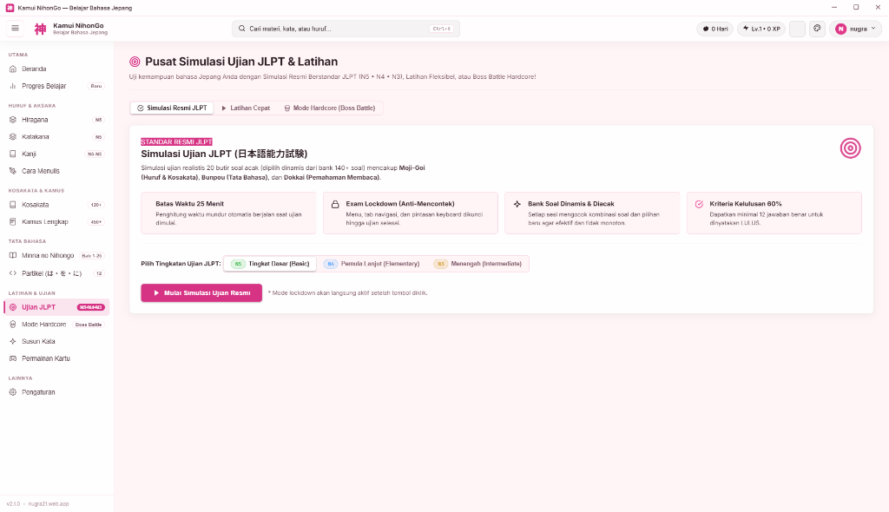
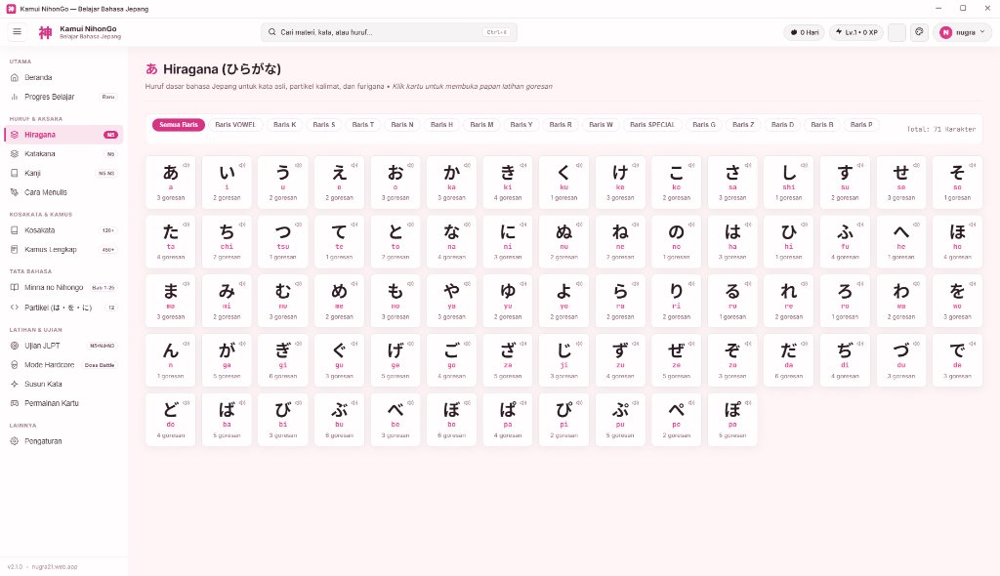
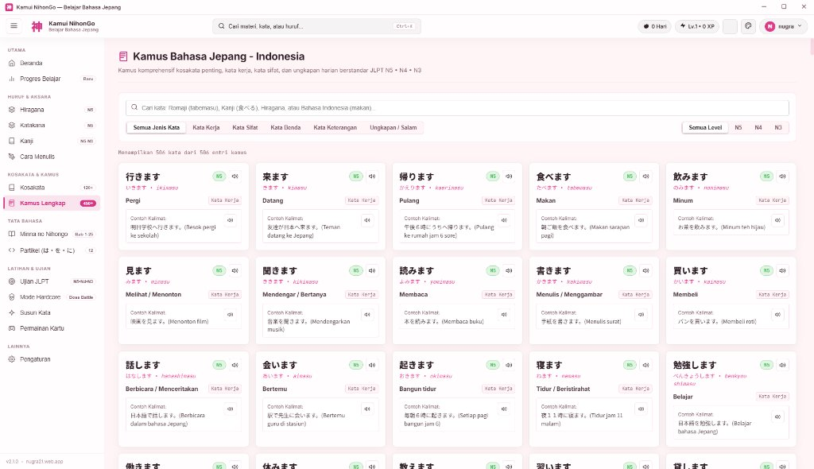
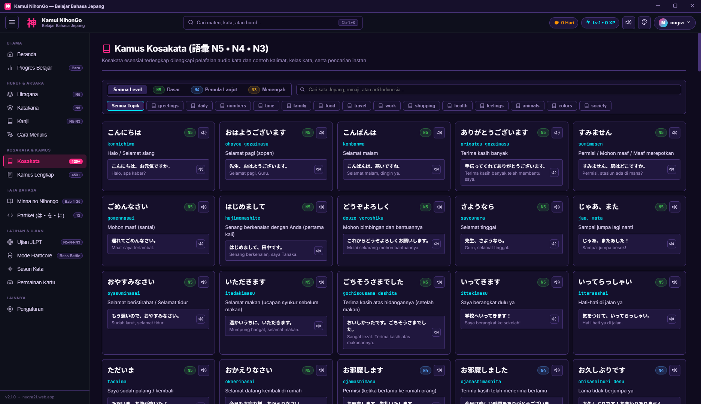
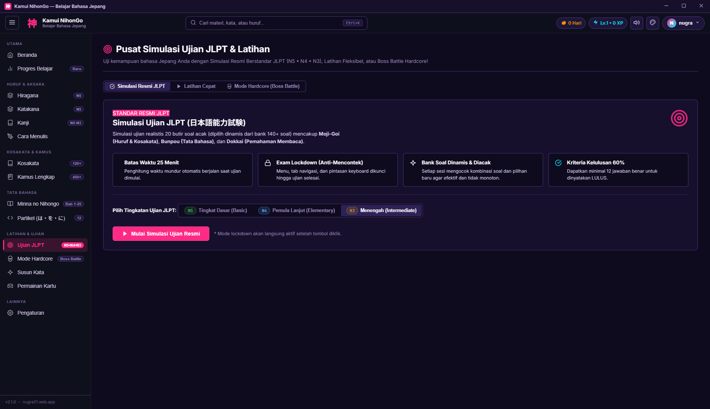

プレビュー
Lihat Langsung
Lihat Langsung
Tampilannya
Tersedia 13 pilihan tema visual — dari Japanese Washi Light hingga Liquid Glass Dark.

13 Tema Tersedia (Klik Thumbnail untuk Menampilkan)
Varian Terang / Light (3)


VS
Varian Gelap / Dark (10)



